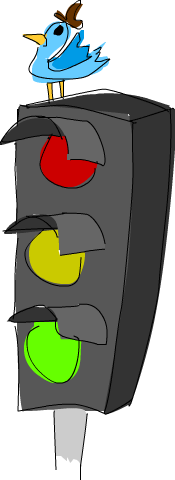
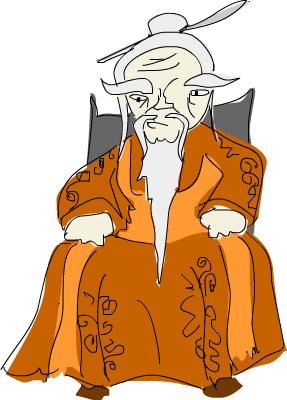

Creando nuestros propios tipos y clases de tipos¶
En capítulos anteriores vimos algunos tipos y clases de tipos de Haskell. ¡En este capítulo vamos a ver como crearlos nosotros mismos! ¿A qué no te lo esperabas?
Introducción a los tipos de datos algebraicos¶
Hasta ahora hemos jugado con muchos tipos: Bool, Int, Char,
Maybe, etc. Pero ¿Cómo los creamos? Bueno, una forma es usar la palabra
clave data para definir un tipo. Vamos a ver como está definido el tipo
Bool en la librería estándar:
data Bool = False | True
data significa que vamos a definir un nuevo tipo de dato. La parte a la
izquierda del = denota el tipo, que es Bool. La parte a la derecha
son los constructores de datos. Estos especifican los diferentes valores
que puede tener un tipo. El | se puede leer como una o. Así que lo
podemos leer como: El tipo Bool puede tener un valor True o False.
Tanto el nombre del tipo como el de los constructores de datos deben tener
la primera letra en mayúsculas.
De la misma forma podemos pensar que el tipo Int está definido como:
data Int = -2147483648 | -2147483647 | ... | -1 | 0 | 1 | 2 | ... | 2147483647
El primer y el último constructor de datos son el mínimo y el máximo valor
posible del tipo Int. En realidad no está definido así, los tres puntos
están ahí porque hemos omitido una buena cantidad de números, así que esto
es solo para motivos ilustrativos.
Ahora vamos a pensar en como definiríamos una figura en Haskell. Una forma
sería usar tuplas. Un círculo podría ser (43.1, 55.0, 10.4) donde el
primer y el segundo campo son las coordenadas del centro del círculo mientras
que el tercer campo sería el radio. Suena bien, pero esto nos permitiría
también definir un vector 3D o cualquier otra cosa. Una solución mejor sería
crear nuestro propio tipo que represente una figura. Digamos que una figura
solo puede ser un círculo o un rectángulo:
data Shape = Circle Float Float Float | Rectangle Float Float Float Float
¿Qué es esto? Piensa un poco a que se parece. El constructor de datos`
Circle tiene tres campos que toman valores en coma flotante. Cuando
creamos un constructor de datos, opcionalmente podemos añadir tipos después
de él de forma que estos serán los valores que contenga. Aquí, los primeros
dos componentes son las coordenadas del centro, mientras que el tercero es
el radio. El constructor de datos Rectangle tiene cuatro campos que
aceptan valores en coma flotante. Los dos primeros representan las coordenadas
de la esquina superior izquierda y los otros dos las coordenadas de la
inferior derecha.
Ahora, cuando hablamos de campos, en realidad estamos hablando de parámetros. Los constructores de datos son en realidad funciones que devuelven un valor del tipo para el que fueron definidos. Vamos a ver la declaración de tipo de estos dos constructores de datos.
ghci> :t Circle
Circle :: Float -> Float -> Float -> Shape
ghci> :t Rectangle
Rectangle :: Float -> Float -> Float -> Float -> Shape
Bien, los constructores de datos son funciones como todo lo demás ¿Quíen lo hubiera pensado? Vamos a hacer una función que tome una figura y devuleva su superficie o área:
surface :: Shape -> Float
surface (Circle _ _ r) = pi * r ^ 2
surface (Rectangle x1 y1 x2 y2) = (abs $ x2 - x1) * (abs $ y2 - y1)
La primera cosa destacable aquí es la declaración de tipo. Dice que toma una
figura y devuelve un valor en coma flotante. No podemos escribir una
declaración de tipo como Circle -> Float ya que Circle no es un tipo,
Shape si lo es. Del mismo modo no podemos declarar una función cuya
declaración de tipo sea True -> Int. La siguiente cosa que podemos
destacar es que podemos usar el ajuste de patrones con los constructores. Ya
hemos utilizado el ajuste de patrones con constructores anteriormente (en
realidad todo el tiempo) cuando ajustamos valores como [], False,
5, solo que esos valores no tienen campos. Simplemente escribimos el
constructor y luego ligamos sus campos a nombres. Como estamos interesados en
el radio, realmente no nos importan los dos primeros valores que nos dicen
donde está el círculo.
ghci> surface $ Circle 10 20 10
314.15927
ghci> surface $ Rectangle 0 0 100 100
10000.0
Bien ¡Funciona! Pero si intentamos mostrar por pantalla Circle 10 20 5
en una sesión de GHCi obtendremos un error. Esto sucede porque Haskell aún no
sabe como representar nuestro tipo con una cadena. Recuerda que cuando
intentamos mostrar un valor por pantalla, primero Haskell ejecuta la función
show para obtener la representación en texto de un dato y luego lo muestra
en la terminal. Para hacer que nuestro tipo Shape forme parte de la clase
de tipo Show hacemos esto:
data Shape = Circle Float Float Float | Rectangle Float Float Float Float deriving (Show)
No vamos a preocuparnos ahora mismo acerca de derivar. Simplemente diremos que
si añadimos deriving (Show) al final de una declaración de tipo,
automáticamente Haskell hace que ese tipo forme parte de la clase de tipos
Show. Así que ahora ya podemos hacer esto:
ghci> Circle 10 20 5
Circle 10.0 20.0 5.0
ghci> Rectangle 50 230 60 90
Rectangle 50.0 230.0 60.0 90.0
Los constructores de datos son funciones, así que podemos mapearlos, aplicarlos parcialmente o cualquier otra cosa. Si queremos una lista de círculos concéntricos con diferente radio podemos escribir esto:
ghci> map (Circle 10 20) [4,5,6,6]
[Circle 10.0 20.0 4.0,Circle 10.0 20.0 5.0,Circle 10.0 20.0 6.0,Circle 10.0 20.0 6.0]
Nuestro tipo de dato es bueno, pero podría se mejor. Vamos a crear un tipo de dato intermedio que defina un punto en espacio bidimensional. Luego lo usaremos para hacer nuestro tipo más evidente.
data Point = Point Float Float deriving (Show)
data Shape = Circle Point Float | Rectangle Point Point deriving (Show)
Te habrás dado cuenta de que hemos usado el mismo nombre para el tipo que para
el constructor de datos. No tiene nada de especial, es algo común usar el
mismo nombre que el del tipo si solo hay un constructor de datos. Así que
ahora Circle tiene dos campos, uno es el del tipo Point y el otro del
tipo Float. De esta forma es más fácil entender que es cada cosa. Lo mismo
sucede para el rectángulo. Tenemos que modificar nuestra función surface
para que refleje estos cambios.
surface :: Shape -> Float
surface (Circle _ r) = pi * r ^ 2
surface (Rectangle (Point x1 y1) (Point x2 y2)) = (abs $ x2 - x1) * (abs $ y2 - y1)
Lo único que hemos cambiado han sido los patrones. Hemos descartado completamente el punto en el patrón del círculo. Por otra parte, en el patrón del rectángulo, simplemente hemos usado un ajuste de patrones anidado para obtener las coordenadas de los puntos. Si hubiésemos querido hacer una referencia directamente a los puntos por cualquier motivo podríamos haber utilizado un patrón como.
ghci> surface (Rectangle (Point 0 0) (Point 100 100))
10000.0
ghci> surface (Circle (Point 0 0) 24)
1809.5574
¿Cómo sería una función que desplaza una figura? Tomaría una figura, la cantidad que se debe desplazar en el eje x, la cantidad que se debe desplazar en el eje y y devolvería una nueva figura con las mismas dimensiones pero desplazada.
nudge :: Shape -> Float -> Float -> Shape
nudge (Circle (Point x y) r) a b = Circle (Point (x+a) (y+b)) r
nudge (Rectangle (Point x1 y1) (Point x2 y2)) a b = Rectangle (Point (x1+a) (y1+b)) (Point (x2+a) (y2+b))
Bastante sencillo. Añadimos las cantidades a desplazar a los puntos que representan la posición de las figuras.
ghci> nudge (Circle (Point 34 34) 10) 5 10
Circle (Point 39.0 44.0) 10.0
Si no queremos trabajar directamente con puntos, podemos crear funciones auxiliares que creen figuras de algún tamaño en el centro del eje de coordenadas de modo que luego las podamos desplazar.
baseCircle :: Float -> Shape
baseCircle r = Circle (Point 0 0) r
baseRect :: Float -> Float -> Shape
baseRect width height = Rectangle (Point 0 0) (Point width height)
ghci> nudge (baseRect 40 100) 60 23
Rectangle (Point 60.0 23.0) (Point 100.0 123.0)
Como es lógico, podemos exportar nuestros datos en los módulos. Para hacerlo,
solo tenemos que escribir el nombre del tipo juntos a las funciones
exportadas, y luego añadirles unos paréntesis que contengan los constructores
de datos que queramos que se exporten, separados por comas. Si queremos que se
exporten todos los constructores de datos para un cierto tipo podemos usar
...
Si quisiéramos exportar las funciones y tipos que acabamos de crear en un módulo, podríamos empezar con esto:
module Shapes
( Point(..)
, Shape(..)
, surface
, nudge
, baseCircle
, baseRect
) where
Haciendo Shape (..) estamos exportando todos los constructores de datos
de Shape, lo que significa que cualquiera que importe nuestro módulo puede
crear figuras usando los constructores Circle y Rectangle. Sería lo
mismo que escribir Shape (Rectangle, Circle).
También podríamos optar por no exportar ningún constructor de datos para
Shape simplemente escribiendo Shape en dicha sentencia. De esta forma,
quien importe nuestro módulo solo podrá crear figuras utilizando las
funciones auxiliares baseCircle y baseRect. Data.Map utiliza este
método. No puedes crear un diccionario utilizando Map.Map [(1,2),(3,4)] ya
que no se exporta el constructor de datos. Sin embargo, podemos crear un
diccionario utilizando funciones auxiliares como Map.fromList. Recuerda,
los constructores de datos son simples funciones que toman los campos del tipo
como parámetros y devuelven un valor de un cierto tipo (como Shape) como
resultado. Así que cuando elegimos no exportarlos, estamos previniendo que la
gente que importa nuestro módulo pueda utilizar esas funciones, pero si alguna
otra función devuelve devuelve el tipo que estamos exportando, las podemos
utilizar para crear nuestros propios valores de ese tipo.
No exportar los constructores de datos de un tipo de dato lo hace más abstracto en el sentido de que oculta su implementación. Sin embargo, los usuarios del módulo no podrán usar el ajuste de patrones sobre ese tipo.
Sintaxis de registro¶

Bien, se nos ha dado la tarea de crear un tipo que describa a una persona. La información que queremos almacenar de cada persona es: nombre, apellidos, edad, altura, número de teléfono y el sabor de su helado favorito. No se nada acerca de ti, pero para mi es todo lo que necesito saber de una persona. ¡Vamos allá!
data Person = Person String String Int Float String String deriving (Show)
Vale. El primer campo es el nombre, el segundo el apellido, el tercero su edad y seguimos contando. Vamos a crear una persona.
ghci> let guy = Person "Buddy" "Finklestein" 43 184.2 "526-2928" "Chocolate"
ghci> guy
Person "Buddy" "Finklestein" 43 184.2 "526-2928" "Chocolate"
Parece interesante, pero desde luego no muy legible ¿Y si queremos crear una función que obtenga información por separado de una persona? Una función que obtenga el nombre de una persona, otra función que obtenga el apellido, etc. Bueno, las tendríamos que definir así:
firstName :: Person -> String
firstName (Person firstname _ _ _ _ _) = firstname
lastName :: Person -> String
lastName (Person _ lastname _ _ _ _) = lastname
age :: Person -> Int
age (Person _ _ age _ _ _) = age
height :: Person -> Float
height (Person _ _ _ height _ _) = height
phoneNumber :: Person -> String
phoneNumber (Person _ _ _ _ number _) = number
flavor :: Person -> String
flavor (Person _ _ _ _ _ flavor) = flavor
¡Fiuuu! La verdad es que no me divertido escribiendo esto. A parte de que este método sea un lío y un poco ABURRIDO de escribir, funciona.
ghci> let guy = Person "Buddy" "Finklestein" 43 184.2 "526-2928" "Chocolate"
ghci> firstName guy
"Buddy"
ghci> height guy
184.2
ghci> flavor guy
"Chocolate"
Ahora es cuando piensas: debe de haber un método mejor. Pues no, lo siento mucho.
Estaba de broma :P Si que lo hay. Los creadores de Haskell fueron muy inteligentes y anticiparon este escenario. Incluyeron un método alternativo de definir tipos de dato. Así es como podríamos conseguir la misma funcionalidad con la sintaxis de registro.
data Person = Person { firstName :: String
, lastName :: String
, age :: Int
, height :: Float
, phoneNumber :: String
, flavor :: String
} deriving (Show)
En lugar de nombrar los campos uno tras otro separados por espacios,
utilizamos un par de llaves. Dentro, primero escribimos el nombre de un campo,
por ejemplo firstName y luego escribimos unos dobles puntos ::
(también conocido como Paamayim Nekudotayim xD) y luego especificamos el
tipo. El tipo de dato resultante es exactamente el mismo. La principal
diferencia es que de esta forma se crean funciones que obtienen esos campos
del tipo de dato. Al usar la sintaxis de registro con este tipo de dato,
Haskell automáticamente crea estas funciones: firstName, lastName,
age, height, phoneNumber y flavor.
ghci> :t flavor
flavor :: Person -> String
ghci> :t firstName
firstName :: Person -> String
Hay otro beneficio cuando utilizamos la sintaxis de registro. Cuando derivamos
Show para un tipo, mostrará los datos de forma diferente si utilizamos la
sintaxis de registro para definir e instanciar el tipo. Supongamos que tenemos
un tipo que representa un coche. Queremos mantener un registro de la compañía
que lo hizo, el nombre del modelo y su años de producción. Mira.
data Car = Car String String Int deriving (Show)
ghci> Car "Ford" "Mustang" 1967
Car "Ford" "Mustang" 1967
Si lo definimos usando la sintaxis de registro, podemos crear un coche nuevo de esta forma:
data Car = Car {company :: String, model :: String, year :: Int} deriving (Show)
ghci> Car {company="Ford", model="Mustang", year=1967}
Car {company = "Ford", model = "Mustang", year = 1967}
Cuando creamos un coche nuevo, no hace falta poner los campos en el orden adecuado mientras que los pongamos todos. Pero si no usamos la sintaxis de registro debemos especificarlos en su orden correcto.
Utiliza la sintaxis de registro cuando un constructor tenga varios campos y no
sea obvio que campo es cada uno. Si definimos el tipo de un vector 3D como
data Vector = Vector Int Int Int, es bastante obvio que esos campos son
las componentes del vector. Sin embargo, en nuestros tipo Person y
Car, no es tan obvio y nos beneficia mucho el uso de esta sintaxis.
Parámetros de tipo¶
Un constructor de datos puede tomar algunos valores como parámetros y producir
un nuevo valor. Por ejemplo, el constructor Car toma tres valores y
produce un valor del tipo coche. De forma similar, un constructor de tipos
puede tomar tipos como parámetros y producir nuevos tipos. Esto puede parecer
un poco recursivo al principio, pero no es nada complicado. Si has utilizado
las plantillas de C++ te será familiar. Para obtener una imagen clara de
como los parámetros de tipo funcionan en realidad, vamos a ver un ejemplo de
como un tipo que ya conocemos es implementado.
data Maybe a = Nothing | Just a

La a es un parámetro de tipo. Debido a que hay un parámetro de tipo
involucrado en esta definición, llamamos a Maybe un constructor de tipos.
Dependiendo de lo que queramos que este tipo contenga cuando un valor no es
Nothing, este tipo puede acabar produciendo tipos como Maybe Int,
Maybe Car, Maybe String, etc. Ningún valor puede tener un tipo que sea
simplemente Maybe, ya que eso no es un tipo por si mismo, es un
constructor de tipos. Para que sea un tipo real que algún valor pueda tener,
tiene que tener todos los parámetros de tipo definidos.
Si pasamos Char como parámetro de tipo a Maybe, obtendremos el tipo
Maybe Char. Por ejemplo, el valor Just 'a' tiene el tipo Maybe
Char.
Puede que no lo sepas, pero utilizamos un tipo que tenía un parámetro de tipo
antes de que empezáramos a utilizar el tipo Maybe. Ese tipo es el tipo
lista. Aunque hay un poco decoración sintáctica, el tipo lista toma un
parámetro para producir un tipo concreto. Los valores pueden tener un tipo
[Int], un tipo [Char], [[String]], etc. pero no puede haber un
valor cuyo tipo sea simplemente [].
Vamos a jugar un poco con el tipo Maybe.
ghci> Just "Haha"
Just "Haha"
ghci> Just 84
Just 84
ghci> :t Just "Haha"
Just "Haha" :: Maybe [Char]
ghci> :t Just 84
Just 84 :: (Num t) => Maybe t
ghci> :t Nothing
Nothing :: Maybe a
ghci> Just 10 :: Maybe Double
Just 10.0
Los parámetros de tipo son útiles ya que nos permiten crear diferentes tipos
dependiendo del tipo que queramos almacenar en nuestros tipos de datos (valga
la redundancia). Cuando hacemos :t Just "Haha" el motor de inferencia de
tipos deduce que el tipo debe ser Maybe [Char], ya que la a en Just
a es una cadena, luego el a en Maybe a debe ser también una cadena.
Como habrás visto el tipo de Nothing es Maybe a. Su tipo es
polimórfico. Si una función requiere un Maybe Int como parámetro le
podemos pasar un Nothing ya que no contiene ningún valor. El tipo Maybe
a puede comportarse como un Maybe Int, de la misma forma que 5 puede
comportarse como un Int o como un Double. De forma similar el tipo de
las listas vacías es [a]. Una lista vacía puede comportarse como cualquier
otra lista. Por eso podemos hacer cosas como [1,2,3] ++ [] y
["ha","ha","ha"] ++ [].
El uso de parámetros de tipo nos puede beneficiar, pero solo en los casos que
tenga sentido. Normalmente los utilizamos cuando nuestro tipo de dato
funcionará igual sin importar el tipo de dato que contenga, justo como nuestro
Maybe a. Si nuestro tipo es como una especie de caja, es un buen lugar
para usar los parámetros de tipo. Podríamos cambiar nuestro tipo Car de:
data Car = Car { company :: String
, model :: String
, year :: Int
} deriving (Show)
A:
data Car a b c = Car { company :: a
, model :: b
, year :: c
} deriving (Show)
Pero ¿Tiene algún beneficio? La respuesta es: probablemente no, ya que al
final acabaremos escribiendo funciones que solo funcionen con el tipo Car
String String Int. Por ejemplo, dada la primera definición de Car,
podríamos crear una función que mostrara las propiedades de un coche con un
pequeño texto:
tellCar :: Car -> String
tellCar (Car {company = c, model = m, year = y}) = "This " ++ c ++ " " ++ m ++ " was made in " ++ show y
ghci> let stang = Car {company="Ford", model="Mustang", year=1967}
ghci> tellCar stang
"This Ford Mustang was made in 1967"
¡Una función muy bonita! La declaración de tipo es simple y funciona
perfectamente. Ahora ¿Cómo sería si Car fuera en realidad Car a b c?
tellCar :: (Show a) => Car String String a -> String
tellCar (Car {company = c, model = m, year = y}) = "This " ++ c ++ " " ++ m ++ " was made in " ++ show y
Tenemos que forzar a que la función tome un Car del tipo (Show a) => Car
String String a. Podemos ver como la definición de tipo es mucho más
complicada y el único beneficio que hemos obtenido es que podamos usar
cualquier tipo que sea una instancia de la clase de tipos Show como
parámetro c.
ghci> tellCar (Car "Ford" "Mustang" 1967)
"This Ford Mustang was made in 1967"
ghci> tellCar (Car "Ford" "Mustang" "nineteen sixty seven")
"This Ford Mustang was made in \"nineteen sixty seven\""
ghci> :t Car "Ford" "Mustang" 1967
Car "Ford" "Mustang" 1967 :: (Num t) => Car [Char] [Char] t
ghci> :t Car "Ford" "Mustang" "nineteen sixty seven"
Car "Ford" "Mustang" "nineteen sixty seven" :: Car [Char] [Char] [Char]
A la hora de la verdad, acabaríamos utilizando Car String String Int la
mayor parte del tiempo y nos daríamos cuenta de que parametrizar el tipo
Car realmente no importa. Normalmente utilizamos los parámetros de tipo
cuando el tipo que está contenido dentro del tipo de dato no es realmente
importante a la hora de trabajar con éste. Una lista de cosas es una lista
de cosas y no importa que sean esas cosas, funcionará igual. Si queremos sumar
una lista de números, mas tarde podemos especificar en la propia función de
suma de que queremos específicamente una lista de números. Lo mismo pasa con
Maybe. Maybe representa la opción de tener o no tener un valor.
Realmente no importa de que tipo sea ese valor.
Otro ejemplo de un tipo parametrizado que ya conocemos es el tipo Map k v
de Data.Map. k es el tipo para las claves del diccionario mientras que
v es el tipo de los valores. Este es un buen ejemplo en donde los
parámetros de tipo son útiles. Al tener los diccionarios parametrizados nos
permiten asociar cualquier tipo con cualquier otro tipo, siempre que la clave
del tipo sea de la clase de tipos Ord. Si estuviéramos definiendo el tipo
diccionario podríamos añadir una restricción de clase en la definición:
data (Ord k) => Map k v = ...
Sin embargo, existe un consenso en el mundo Haskell de que nunca debemos
añadir restricciones de clase a las definiciones de tipo. ¿Por qué? Bueno,
porque no nos beneficia mucho, pero al final acabamos escribiendo más
restricciones de clase, incluso aunque no las necesitemos. Si ponemos o no
podemos la restricción de clase Ord k en la definición de tipo de Map k
v, tendremos que poner de todas formas la restricción de clase en las
funciones que asuman que las claves son ordenables. Pero si no ponemos la
restricción en la definición de tipo, no tenemos que poner (Ord k) => en
la declaración de tipo de las funciones que no les importe si la clave puede
es ordenable o no. Un ejemplo de esto sería la función toList que
simplemente convierte un diccionario en una lista de asociación. Su
declaración de tipo es toList :: Map k a -> [(k, a)]. Si Map k v
tuviera una restricción en su declaración, el tipo de toList debería haber
sido toList :: (Ord k) => Map k a -> [(k, a)] aunque la función no
necesite comparar ninguna clave.
Así que no pongas restricciones de clase en las declaraciones de tipos aunque tenga sentido, ya que al final las vas a tener que poner de todas formas en las declaraciones de tipo de las funciones.
Vamos a implementar un tipo para vectores 3D y crear algunas operaciones con ellos. Vamos a usar un tipo parametrizado ya que, aunque normalmente contendrá números, queremos que soporte varios tipos de ellos.
data Vector a = Vector a a a deriving (Show)
vplus :: (Num t) => Vector t -> Vector t -> Vector t
(Vector i j k) `vplus` (Vector l m n) = Vector (i+l) (j+m) (k+n)
vectMult :: (Num t) => Vector t -> t -> Vector t
(Vector i j k) `vectMult` m = Vector (i*m) (j*m) (k*m)
scalarMult :: (Num t) => Vector t -> Vector t -> t
(Vector i j k) `scalarMult` (Vector l m n) = i*l + j*m + k*n
vplus sirve para sumar dos vectores. Los vectores son sumados simplemente
sumando sus correspondientes componentes. scalarMult calcula el producto
escalar de dos vectores y vectMult calcula el producto de un vector y un
escalar. Estas funciones pueden operar con tipos como Vector Int,
Vector Integer, Vector Float o cualquier otra cosa mientras a de
Vector a sea miembro de clase de tipos Num. También, si miras la
declaración de tipo de estas funciones, veras que solo pueden operar con
vectores del mismo tipo y los números involucrados (como en vectMult)
también deben ser del mismo tipo que el que contengan los vectores. Fíjate en
que no hemos puesto una restricción de clase Num en la declaración del
tipo Vector, ya que deberíamos haberlo repetido también en las
declaraciones de las funciones.
Una vez más, es muy importante distinguir entre constructores de datos y
constructores de tipo. Cuando declaramos un tipo de dato, la parte anterior al
= es el constructor de tipos, mientras que la parte que va después
(posiblemente separado por |) son los constructores de datos. Dar a una
función el tipo Vector t t t -> Vector t t t -> t sería incorrecto ya que
hemos usado tipos en la declaración y el constructor de tipos vector toma un
solo parámetro, mientras que el constructor de datos toma tres. Vamos a jugar
un poco con los vectores:
ghci> Vector 3 5 8 `vplus` Vector 9 2 8
Vector 12 7 16
ghci> Vector 3 5 8 `vplus` Vector 9 2 8 `vplus` Vector 0 2 3
Vector 12 9 19
ghci> Vector 3 9 7 `vectMult` 10
Vector 30 90 70
ghci> Vector 4 9 5 `scalarMult` Vector 9.0 2.0 4.0
74.0
ghci> Vector 2 9 3 `vectMult` (Vector 4 9 5 `scalarMult` Vector 9 2 4)
Vector 148 666 222
Instancias derivadas¶

En la sección Clases de tipos paso a paso (1ª parte), explicamos las bases de las clases de
tipo. Dijimos que una clase de tipos es una especie de interfaz que define un
comportamiento. Un tipo puede ser una instancia de esa clase si soporta
ese comportamiento. Ejemplo: El tipo Int es una instancia de la clase
Eq, ya que la clase de tipos Eq define el comportamiento de cosas que
se pueden equiparar. Y como los enteros se pueden equiparar, Int es parte
de la clase Eq. La utilidad real está en las funciones que actúan como
interfaz de Eq, que son == y /=. Si un tipo forma parte de la
clase Eq, podemos usar las funciones como == con valores de ese tipo.
Por este motivo, expresiones como 4 == 4 y "foo" /= "bar" son
correctas.
Mencionamos también que las clases de tipos suelen ser confundidas con las
clases de lenguajes como Java, Python, C++ y demás, cosa que más tarde
desconcierta a la gente. En estos lenguajes, las clases son como un modelo del
cual podemos crear objetos que contienen un estado y pueden hacer realizar
algunas acciones. Las clases de tipos son más bien como las interfaces. No
creamos instancias a partir de las interfaces. En su lugar, primero creamos
nuestro tipo de dato y luego pensamos como qué puede comportarse. Si puede
comportarse como algo que puede ser equiparado, hacemos que sea miembro de la
clase Eq. Si puede ser puesto en algún orden, hacemos que sea miembro de
la clase Ord.
Más adelante veremos como podemos hacer manualmente que nuestros
tipos sean una instancia de una clase de tipos implementando las funciones
que esta define. Pero ahora, vamos a ver como Haskell puede automáticamente
hacer que nuestros tipos pertenezcan a una de las siguientes clases: Eq,
Ord, Enum, Bounded, Show y Read. Haskell puede derivar
el comportamiento de nuestros tipos en estos contextos si usamos la palabra
clave deriving cuando los definimos.
Considera el siguiente tipo de dato:
data Person = Person { firstName :: String
, lastName :: String
, age :: Int
}
Describe a una persona. Vamos a asumir que ninguna persona tiene la misma
combinación de nombre, apellido y edad. Ahora, si tenemos registradas a dos
personas ¿Tiene sentido saber si estos dos registros pertenecen a la misma
persona? Parece que sí. Podemos compararlos por igualdad y ver si son iguales
o no. Por esta razón tiene sentido que este tipo se miembro de la clase de
tipo Eq. Derivamos la instancia:
data Person = Person { firstName :: String
, lastName :: String
, age :: Int
} deriving (Eq)
Cuando derivamos una instancia de Eq para un tipo y luego intentamos
comparar dos valores de ese tipo usando == o /=, Haskell comprobará
si los constructores de tipo coinciden (aunque aquí solo hay un constructor
de tipo) y luego comprobará si todos los campos de ese constructor coinciden
utilizando el operador = para cada par de campos. Solo tenemos que tener
en cuenta una cosa, todos los campos del tipo deben ser también miembros de la
clase de tipos Eq. Como String y Int ya son miembros, no hay ningún
problema. Vamos a comprobar nuestra instancia Eq.
ghci> let mikeD = Person {firstName = "Michael", lastName = "Diamond", age = 43}
ghci> let adRock = Person {firstName = "Adam", lastName = "Horovitz", age = 41}
ghci> let mca = Person {firstName = "Adam", lastName = "Yauch", age = 44}
ghci> mca == adRock
False
ghci> mikeD == adRock
False
ghci> mikeD == mikeD
True
ghci> mikeD == Person {firstName = "Michael", lastName = "Diamond", age = 43}
True
Como ahora Person forma parte de la clase Eq, podemos utilizarlo como
a en las funciones que tengan una restricción de clase del tipo Eq a
en su declaración, como elem.
ghci> let beastieBoys = [mca, adRock, mikeD]
ghci> mikeD `elem` beastieBoys
True
Las clases de tipos Show y Read son para cosas que pueden ser
convertidas a o desde cadenas, respectivamente. Como pasaba con Eq, si un
constructor de tipos tiene campos, su tipo debe ser miembro de la clase`
Show o Read si queremos que también forme parte de estas clases.
Vamos a hacer que nuestro tipo de dato Person forme parte también de las
clases Show y Read.
data Person = Person { firstName :: String
, lastName :: String
, age :: Int
} deriving (Eq, Show, Read)
Ahora podemos mostrar una persona por la terminal.
ghci> let mikeD = Person {firstName = "Michael", lastName = "Diamond", age = 43}
ghci> mikeD
Person {firstName = "Michael", lastName = "Diamond", age = 43}
ghci> "mikeD is: " ++ show mikeD
"mikeD is: Person {firstName = \"Michael\", lastName = \"Diamond\", age = 43}"
Si hubiésemos intentado mostrar en la terminal una persona antes de hacer que
el tipo Person formara parte de la clase Show, Haskell se hubiera
quejado, diciéndonos que no sabe como representar una persona con una cadena.
Pero ahora que hemos derivado la clase Show ya sabe como hacerlo.
Read es prácticamente la clase inversa de Show. Show sirve para
convertir nuestro tipo a una cadena, Read sirve para convertir una cadena
a nuestro tipo. Aunque recuerda que cuando uses la función read hay que
utilizar una anotación de tipo explícita para decirle a Haskell que tipo
queremos como resultado. Si no ponemos el tipo que queremos como resultado
explícitamente, Haskell no sabrá que tipo queremos.
ghci> read "Person {firstName =\"Michael\", lastName =\"Diamond\", age = 43}" :: Person
Person {firstName = "Michael", lastName = "Diamond", age = 43}
No hace falta utilizar una anotación de tipo explícita en caso de que usemos
el resultado de la función read de forma que Haskell pueda inferir el
tipo.
ghci> read "Person {firstName =\"Michael\", lastName =\"Diamond\", age = 43}" == mikeD
True
También podemos leer tipos parametrizados, pero tenemos que especificar todos
los parámetros del tipo. Así que no podemos hacer
read "Just 't'" :: Maybe a pero si podemos hacer read "Just 't'" ::
Maybe Char.
Podemos derivar instancias para la clase de tipos Ord, la cual es para
tipos cuyos valores puedan ser ordenados. Si comparamos dos valores del mismo
tipo que fueron definidos usando diferentes constructores, el valor cuyo
constructor fuera definido primero es considerado menor que el otro. Por
ejemplo, el tipo Bool puede tener valores False o True. Con el
objetivo de ver como se comporta cuando es comparado, podemos pensar que está
implementado de esta forma:
data Bool = False | True deriving (Ord)
Como el valor False está definido primero y el valor True está
definido después, podemos considerar que True es mayor que False.
ghci> True compare False GT ghci> True > False True ghci> True < False False
En el tipo Maybe a, el constructor de datos Nothing esta definido
antes que el constructor Just, así que un valor Nothing es siempre más
pequeño que cualquier valor Just algo, incluso si ese algo es menos un
billon de trillones. Pero si comparamos dos valores Just, entonces se
compara lo que hay dentro de él.
ghci> Nothing < Just 100
True
ghci> Nothing > Just (-49999)
False
ghci> Just 3 `compare` Just 2
GT
ghci> Just 100 > Just 50
True
No podemos hacer algo como Just (*3) > Just (*2), ya que (*3) y
(*2) son funciones, las cuales no tienen definida una instancia de
Ord.
Podemos usar fácilmente los tipos de dato algebraicos para crear
enumeraciones, y las clases de tipos Enum y Bounded nos ayudarán a
ello. Considera el siguiente tipo de dato:
data Day = Monday | Tuesday | Wednesday | Thursday | Friday | Saturday | Sunday
Como ningún contructor de datos tiene parámetros, podemos hacerlo miembro de
la clase de tipos Enum. La clase Enum son para cosas que tinen un
predecesor y sucesor. Tambien podemos hacerlo miembro de la clase de tipos
Bounded, que es para cosas que tengan un valor mínimo posible y valor
máximo posible. Ya que nos ponemos, vamos a hacer que este tipo tenga una
instancia para todas las clases de tipos derivables que hemos visto y veremos
que podemos hacer con él.
data Day = Monday | Tuesday | Wednesday | Thursday | Friday | Saturday | Sunday
deriving (Eq, Ord, Show, Read, Bounded, Enum)
Como es parte de las clases de tipos Show y Read, podemos convertir
valores de est tipo a y desde cadenas.
ghci> Wednesday
Wednesday
ghci> show Wednesday
"Wednesday"
ghci> read "Saturday" :: Day
Saturday
Como es parte de las clases de tipos Eq y Ord, podemos comparar o
equiparar días.
ghci> Saturday == Sunday
False
ghci> Saturday == Saturday
True
ghci> Saturday > Friday
True
ghci> Monday `compare` Wednesday
LT
También forma parte de Bounded, así que podemos obtener el día mas bajo
o el día más alto.
ghci> minBound :: Day
Monday
ghci> maxBound :: Day
Sunday
También es una instancia de la clase Enum. Podemos obtener el predecesor
y el sucesor de un día e incluso podemos crear listas de rangos con ellos.
ghci> succ Monday
Tuesday
ghci> pred Saturday
Friday
ghci> [Thursday .. Sunday]
[Thursday,Friday,Saturday,Sunday]
ghci> [minBound .. maxBound] :: [Day]
[Monday,Tuesday,Wednesday,Thursday,Friday,Saturday,Sunday]
Bastante impresionante.
Sinónimos de tipo¶
Anteriormente mencionamos que los tipos [Char] y String eran
equivalentes e intercambiables. Esto está implementado con los sinónimos de
tipo. Los sinónimos de tipo no hacen nada por si solo, simplemente dan a
algún tipo un nombre diferente, de forma que obtenga algún significado para
alguien que está leyendo nuestro código o documentación. Aquí tienes como
define la librería estándar String como sinónimo de [Char].
type String = [Char]
Acabamos de intrudir la palabra clave type. Esta palabra clave podría
inducir a errores a algunos, ya que en realidad no estamos haciendo haciendo
nada nuevo (lo hacemos con la palabra clave data). Simplemente estamos
dando un sinónimos a un tipo que ya existe.
Si hacemos una función que convierta una cadena a mayúscuals y la llamamos
toUpperString o algo parecido, podemos darle una declaración de tipo como
toUpperString :: [Char] -> [Char] o toUpperString :: String -> String.
Ambas son esecialmente lo mismo, solo que la última es más legible.
Cuando estabamos hablando del módulo Data.Map, primero presentamos una
agenda de teléfonos representada con una lista de asociación para luego
convertirla en un diccionario. Como ya sabemos, una lista de asociación no
es más que una lista de duplas clave-valor. Vamos a volver a ver la lista que
teníamos.
phoneBook :: [(String,String)]
phoneBook =
[("betty","555-2938")
,("bonnie","452-2928")
,("patsy","493-2928")
,("lucille","205-2928")
,("wendy","939-8282")
,("penny","853-2492")
]
Vemos que el tipo de phoneBook es [(String,String)]. Esto nos dice que
es una lista de asociación que asocia cadenas con cadena, pero nada más. Vamos
a crear un sinónimo de tipo para transmitir algo más de información en la
declaración de tipo.
type PhoneBook = [(String,String)]
Ahora la declaración de tipo de nuestra función phoneBook sería
phoneBook :: PhoneBook. Vamos a hacer un sinónimo de tipo para las cadenas
también.
type PhoneNumber = String
type Name = String
type PhoneBook = [(Name,PhoneNumber)]
Dar un sinónimo al tipo String es algo que suelen hacer los programadores
de Haskell cuando quieren transmitir algo más de información acerca del
cometido de las cadenas en sus funciones y que representan.
Así que ahora, cuando implementemos una función que tome el nombre y el número de teléfono y busque si esa combinación está en nuestra agenda telefónica, podremos darle una declaración de tipo muy descriptiva:
inPhoneBook :: Name -> PhoneNumber -> PhoneBook -> Bool
inPhoneBook name pnumber pbook = (name,pnumber) `elem` pbook
Si decidimo no utilizar sinónimos de tipo, nuestra función tendría la
declaración de tipo String -> String -> [(String,String)] -> Bool. En
este caso, la declaración de tipo que utiliza los sinónimos de tipo es mucho
más clara y fácil de entender. Sin embargo, no debes abusar de ellos.
Utilizamos los sinónimos de tipo o bien para indicar que representa un tipo
que ya existe en nuestras funciones (y de esta forma nuestras delcaraciones
de tipo se convierten en la mejor documentación) o bien cuando algo tiene
un tipo muy largo que se repite mucho (como [(String,String)]) y tiene
un significado concreto para nosotros.
Los sinónimos de tipo también pueden ser parametrizados. Si queremos un tipo que represente las listas de asociación pero también queremos que sea lo suficientemente general como para utilizar cualquier tipo de clave y valor, podemos utilizar esto:
type AssocList k v = [(k,v)]
Con esto, una función que tomara un valor por clave en una lista de
asociación puede tener el tipo (Eq k) => k -> AssocList k v -> Maybe v.
AssocList es un constructor de tipos que toma dos tipos y produce un tipo
concreto, como AssocList Int String por ejemplo.
Nota
Cuando hablamos de tipos concretos nos referimos a tipos
completamente aplicados, como Map Int String. A veces, los
chicos y yo decimos que Maybe es un tipo, pero no queremos
referirnos a eso, ya que cualquier idiota sabe que Maybe es un
constructor de tipos. Cuando aplico un tipo extra a Maybe, como
Maybe String, entonces tengo un tipo concreto. Ya sabes, los
valores solo pueden tener tipos que sean tipos concretos.
Concluyendo, vive rápido, quiere mucho y no dejes que nadie te
tome el pelo.
De la misma forma que podemos aplicar parcialmente funciones para obtener
nuevas funciones, podemos aplicar parcialmente los parámetros de tipo y
obtener nuevos constructores de tipo. De la misma forma que llamamos a la
funciones con parámetros de menos para obtener nuevas funciones, podemos
especificar un constructor de tipos con parámetros de menos y obtener un
constructor de tipos parcialmente aplicado. Si queremos un tipo que represente
un diccionario (de Data.Map) que asocie enteros con cualquier otra cosa,
podemos utilizar esto:
type IntMap v = Map Int v
O bien esto otro:
type IntMap = Map Int
De cualquier forma, el constructor de tipos IntMap tomará un parámetro
y ese será el tipo con el que se asociarán los enteros.
Nota
Si vas a intentar implementar esto, seguramente imporatarás de forma
cualificada el módulo Data.Map. Cuando realizas una importación
cualificada, los constructores de tipo también deben estar
precedidos con el nombre del módulo. Así que tienes que escribir
algo como type IntMap = Map.Map Int.
Asegurate de que realmente entiendes la diferencia entre constructores de
tipos y constructores de datos. Solo porque hayamos creado un sinónimo llamado
IntMap o AssocList no significa que podamos hacer cosas como
AssocList [(1,2),(4,5),(7,9)]. Lo único que significa es que podemos
referirnos a ese tipo usando nombres diferentes. Podemos hacer
[(1,2),(3,5),(8,9)] :: AssocList Int Int, lo cual hará que los número de
adentro asuman el tipo Int, pero podemos seguir usando esta lista como
si fuera una lista que albergara duplas de enteros. Lo sinónimos de tipo
(y los tipos en general) solo pueden ser utlizados en la porción de Haskell
dedicada a los tipos. Estaremos en esta porción de Haskell cuando estemos
definiendo tipos nuevos (tanto en las declaraciones data como en las de
type) o cuando nos situemos después de un ::. :: se utiliza
solo para las declaraciones o anotaciones de tipo.
Otro tipo de dato interesante que toma dos tipos como parámetro es el tipo
Either a b. Así es como se define más o menos:
data Either a b = Left a | Right b deriving (Eq, Ord, Read, Show)
Tiene dos constructores de datos. Si se utiliza Left, entonces contiene
datos del tipo a y si se utiliza Right contiene datos del tipo b.
Podemos utilizar este tipo para encapsular un valor de un tipo u otro y así
obtener un valor del tipo Either a b. Normalmente utilizaremos un
ajuste de patrones con ambos, Left y Right, y nos diferenciaremos
según sea uno u otro.
ghci> Right 20
Right 20
ghci> Left "w00t"
Left "w00t"
ghci> :t Right 'a'
Right 'a' :: Either a Char
ghci> :t Left True
Left True :: Either Bool b
Hasta ahora hemos visto que Maybe a es utilizado para representar
resultados de cálculos que podrían haber fallado o no. Pero a veces,
Maybe a no es suficientemente bueno ya que Nothing únicamente nos
informa de que algo ha fallado. Esto esta bien para funciones que solo pueden
fallar de una forma o si no nos interesa saber porque y como han fallado.
Una búqueda en un Data.Map solo falla cuando la clave que estamos buscando
no se encuentra en el diccionario, así que sabemos exacmente que ha pasado.
Sin embargo, cuando estamos interesados en el cómo o el porqué a fallado algo,
solemos utilizar como resultado el tipo Either a b, donde a es alguna
especie de tipo que pueda decirnos algo sobre un posible fallo, y b es
el tipo de un cálculo satisfactorio. Por lo tanto, los errores usan el
constructor de datos Left mientras que los resultado usan Right.
Un ejemplo: un instituto posee taquillas para que sus estudiantes tengan un
lugar donde guardar sus posters de Guns’n’Roses. Cada taquilla tiene una
combinación. Cuando un estudiante quiere una taquilla nueva, le dice al
supervisor de las taquillas que número de taquilla quiere y él le da un
código para esa taquilla. Sin embargo, si alguien ya está usando la taquilla,
no le puede decir el código y tienen que elegir una taquilla diferente.
Utilizaremos un diccionario de Data.Map para representar las taquillas.
Asociará el número de la taquilla con duplas que contengan si la taquilla está
en uso o no y el código de la taquilla.
import qualified Data.Map as Map
data LockerState = Taken | Free deriving (Show, Eq)
type Code = String
type LockerMap = Map.Map Int (LockerState, Code)
Bastante simple. Hemo creado un nuevo tipo de dato para representar si una
taquilla está libre o no, y hemos creado un sinónimo para representar el
código de una taquilla. También creado otro sinónimo para el tipo que asocia
los los números de las taquillas con las duplas de estado y código. Ahora,
vamos a hacer una función que busque un número de taquilla en el diccionario.
Vamos a usar el tipo Either String Code para representar el resultado,
ya que nuestra búsqueda puede fallar de dos formas: la taquilla ya ha sido
tomada, en cuyo caso decimos quien la posee o si el no hay ninguna taquilla
con ese número. Si la búqueda falla, vamos a utilizar una cadena para obtener
el porqué.
lockerLookup :: Int -> LockerMap -> Either String Code
lockerLookup lockerNumber map =
case Map.lookup lockerNumber map of
Nothing -> Left $ "Locker number " ++ show lockerNumber ++ " doesn't exist!"
Just (state, code) -> if state /= Taken
then Right code
else Left $ "Locker " ++ show lockerNumber ++ " is already taken!"
Hacemos una búsqueda normal en un diccionario. Si obtenemos Nothing,
devolvemos un valor con el tipo Left String que diga que esa taquilla no
existe. Si la encontramos, hacemos una comprobación adicional para ver si la
taquilla está libre. Si no lo está, devolvemos un Left diciendo que la
taquilla a sido tomada. Si lo está, devolvemos un valor del tipo Right
Code, el cual daremos al estudiante. En realidad es un Right String,
aunque hemos creado un sinónimo para añadir un poco más de información en
la declaración de tipo. Aquí tienes un diccionario de ejemplo:
lockers :: LockerMap
lockers = Map.fromList
[(100,(Taken,"ZD39I"))
,(101,(Free,"JAH3I"))
,(103,(Free,"IQSA9"))
,(105,(Free,"QOTSA"))
,(109,(Taken,"893JJ"))
,(110,(Taken,"99292"))
]
Vamos a buscar el código de unas cuantas taquillas:
ghci> lockerLookup 101 lockers
Right "JAH3I"
ghci> lockerLookup 100 lockers
Left "Locker 100 is already taken!"
ghci> lockerLookup 102 lockers
Left "Locker number 102 doesn't exist!"
ghci> lockerLookup 110 lockers
Left "Locker 110 is already taken!"
ghci> lockerLookup 105 lockers
Right "QOTSA"
Podríamos haber utlizado el tipo Maybe a para representar el resultado
pero entonces no sabríamos el motivo por el cual no podemos obtener el código.
Ahora, tenemos información acerca del fallo en nuestro tipo del resultado.
Estructuras de datos recursivas¶

Como ya hemos visto, un costructor de un tipo de dato algebraico puede tener (o no tener) varios campos y cada uno de estos debe ser un tipo concreto. Teniendo esto en cuenta, podemos crear tipos cuyos campos de constructor sean el propio tipo. De esta forma, podemos crear estructuras de datos recursivas, en el que un valor de un cierto tipo contenga valores de ese mismo tipo, el cual seguirá conteniendo valores del mismo tipo y así sucesivamente.
Piensa en la lista [5]. Es lo mismo que 5:[]. A la izquierda del :
hay un valore, y a la derecha hay una lista. En este caso, una lista vacía.
¿Qué pasaría con la lista [4,5]? Bueno, es lo mismo que 4:(5:[]). Si
miramos el primer :, vemos que también tiene un elemento a su izquierda y
una lista a su derecha (5:[]). Lo mismo sucede para la lista
3:(4:(5:6:[])), que también podría escribirse como 3:4:5:6:[] (ya que
: es asociativo por la derecha) o [3,4,5,6].
Podemos decir que una lista es o bien una lista vacia o bien un elemento
unido con un : a otra lista (que puede ser una lista vacía o no).
¡Vamos a usar los tipod de datos algebraicos para implementar nuestra propia lista!
data List a = Empty | Cons a (List a) deriving (Show, Read, Eq, Ord)
Se lee de la misma forma que se leía nuestra definición de lista en un párrafo anterior. Es o bien una lista vacía o bien una combinación de un elemento y otra lista. Si estás confundido con esto, quizás te sea más fácil entenderlo con la sintaxis de registro:
data List a = Empty | Cons { listHead :: a, listTail :: List a} deriving (Show, Read, Eq, Ord)
Puede que también estes confundido con el constructor Cons. Cons es
otra forma de decir :. En realidad, en las listas, : es un constructor
que toma un valor y otra lista y devuleve una lista. En otras palabras, tiene
dos campos. Uno es del tipo a y otro es del tipo [a].
ghci> Empty
Empty
ghci> 5 `Cons` Empty
Cons 5 Empty
ghci> 4 `Cons` (5 `Cons` Empty)
Cons 4 (Cons 5 Empty)
ghci> 3 `Cons` (4 `Cons` (5 `Cons` Empty))
Cons 3 (Cons 4 (Cons 5 Empty))
Si hubiésemos llamado a nuestro constructor de forma infija podrías ver mejor
como es simplemente :. Empty es como [] y 4 `Cons` (5 `Cons`
Empty) es como 4:(5:[]).
Podemos definir funciones que automáticamente sean infijas si las nombramos únicamente con caracteres especiales. Podemos hacer lo mismo con los constructores, ya que son simplemente funciones que devuelve un tipo de dato concreto. Mira esto:
infixr 5 :-:
data List a = Empty | a :-: (List a) deriving (Show, Read, Eq, Ord)
Antes de nada, vemos que hay una nueva construcción sintáctica, una
declaración infija. Cuando definimos funciones como operadores, podemos usar
esta cosntrucción para darles un determinado comportamiento (aunque no estamos
obligados a hacerlo). De esta forma definimos el orden de precedencia de un
operador y si asociativo por la izquierda o por la derecha. Por ejemplo, *
es infixl 7 * y + es infixl 6 +. Esto siginifica que ambos son
asociativos por la izquierda de forma que (4 * 3 * 2) es (4 * 3) * 2)
pero * tiene un orden de precedencia mayor que +, por lo que
5 * 4 + 3 es equivalente a (5 * 4) + 3.
De qualquier modo, al final acabamos escribiendo a :-: (List a) en lugar
de `` Cons a (List a)``. Ahora podemos escribir las listas así:
ghci> 3 :-: 4 :-: 5 :-: Empty
(:-:) 3 ((:-:) 4 ((:-:) 5 Empty))
ghci> let a = 3 :-: 4 :-: 5 :-: Empty
ghci> 100 :-: a
(:-:) 100 ((:-:) 3 ((:-:) 4 ((:-:) 5 Empty)))
Haskell serguirá mostrando el cosntructor como una función prefija cuando
derivemos Show, por este motivo aparecen los poréntesis alrededor del
constructor (recuerda que 4 + 3 es igual que (+) 4 3).
Vamos a crear una función que una dos de nuestras listas. Así es como está
definida la función ++ para listas normales:
infixr 5 ++
(++) :: [a] -> [a] -> [a]
[] ++ ys = ys
(x:xs) ++ ys = x : (xs ++ ys)
Así que copiamos esta definición y la aplicamos a nuestras listas:
infixr 5 .++
(.++) :: List a -> List a -> List a
Empty .++ ys = ys
(x :-: xs) .++ ys = x :-: (xs .++ ys)
Y así es como funciona:
ghci> let a = 3 :-: 4 :-: 5 :-: Empty
ghci> let b = 6 :-: 7 :-: Empty
ghci> a .++ b
(:-:) 3 ((:-:) 4 ((:-:) 5 ((:-:) 6 ((:-:) 7 Empty))))
Bien. Si te apetece puedes implementar todas las funciones que operan con listas con nuestro tipo de listas.
Fíjate que hemos utilizado un ajuste de patrón (x :-: xs). Esto función
ya que el ajuste de patrones en realidad funciona ajustando constructores.
Podemos ajustar un patrón :-: porque es un constructor de nuesto tipo de
la misma forma que : es un constructor de las listas estándar. Lo mismo
sucede para []. Ya que el ajuste de patrones funciona (solo) con
constructores de datos, podemos ajustar patrones como los constructores
prefijos normales, constructores infijos o cosas como 8 o 'a', que
al fin y al cabo son constructores de tipos númericos y caracteres.

Vamos a implementar un árbol binario de búsqueda. Si no estás familiarizado con los árboles binarios de búsqueda de otros lenguajes como C, aquí tienes una expliación de lo que son: un elemento apunta a otros dos elementeos, uno esta a la izquierda y otro a la derecha. El elemento a la izquierda es más pequeño y el segundo es más grande. Cada uno de estos dos elementos puede apuntar a otros dos elementos (o a uno o a ninguno). En efecto, cada elemento tienen sus propios sub-árboles. Lo bueno de los árboles binarios de búsqueda es que sabemos que todos los elementos que están en el sub-árbol de la iquierda de, 5, por ejemplo, son menores que 5. Lo elementos que están en el sub-árbol de la derecha son mayores. Así que si estamos buscando el elemento 8 en nuestro árbol, emepezamos comparándolo con 5, como vemos que es menor que 5, nos vamos al sub-árbol de la derecha. Ahora estaríamos en 7, como es menor que 8 continuaríamos hacia la derecha. De esta formá encontraríamos el elemento en tres pasos. Si estuvieramos usando una lista (o un árbol no balanceado), nos hubiera costado unos 7 pasos encontrar el 8.
Los conjuntos y diccionario de Data.Set y Data.Map están
implementandos utilizando árboles, solo que en lugar de árboles binarios
de búsqueda, utilizan árboles binarios de búsqueda balanceados, de forma que
estén siempre balanceados. Ahora implementaremos simplemente árboles binarios
de búsqueda normales.
Vamos a decir que: un árbol es o bien un árbol vacío o bien un elemento que contiene un elemento y otros dos árboles. Tiene pinta de que va a encajar perfectamente con los tipos de datos algebraicos.
data Tree a = EmptyTree | Node a (Tree a) (Tree a) deriving (Show, Read, Eq)
Vale. En lugar de construir manualmente un árbol, vamos a crear una función que tome un elemento y un árbol e inserte dicho elemento en su posición adecuada dentro del árbol. Hacemos esto comparando el elemento que queremos insertar con la raíz del árbol y si es menor, vamos a la izquierda y si no a la derecha. Hacemos lo mismo para coda nodo siguiente hasta que alcanzemos un árbol vacío. Cuando lo hagamos simplemente insertamos el elmento en lugar del árbol vacío.
En lenguajes como C, realizamos esta tarea modificando los punteros y
valores del árbol. En Haskell, no podemos modificar nuestro árboles, así que
tenemos que crear un nuevo sub-árbol cada vez que decidamos si vamos a la
derecha o a la izquierda y al final la función de inserción devolver un
árbol complentamente nuevo, ya que Haskell no tiene el concepto de puntero.
Así pues la declaración de tipo de nuestra función será alfgo como a ->
Tree a - > Tree a. Toma un elemento y un árbol y devuelve un nuevo árbol que
posee en su interior dicho elemento. Puede parecer ineficienciente pero la
evaluación perezosa de Hasekell ya se encarga de ello.
Aqui tienes dos funciones. Una de ellas es una función auxiliar para crear un árbol unitario (que solo contiene un elemento) y la otra es una función que inserta elementos en un árbol.
singleton :: a -> Tree a
singleton x = Node x EmptyTree EmptyTree
treeInsert :: (Ord a) => a -> Tree a -> Tree a
treeInsert x EmptyTree = singleton x
treeInsert x (Node a left right)
| x == a = Node x left right
| x < a = Node a (treeInsert x left) right
| x > a = Node a left (treeInsert x right)
La función singleton es forma rápida de crear un árbol que contenga un
elemento y dos sub-árboles vacios. En la función de inserción, tenemos como
primer patrón el caso base. Si hemos alcanzado un sub-árbol vacio, esto
significa que estamos donde queríamos y en lugar de un árbol vacío, queremos
un árbol unitario que contenga el elemento a insertar. Si no estamos
insertando el elemento en un árbol vacío tenemos que comprobar varias cosas.
Primero, si el elemento que vamos a insertar es el mismo que la raíz del
sub-árbol, simplemente devolvemos el árbol como estaba. Si es menor,
devolvemos un árbol que tenga la misma raíz, el mimso sub-árbol derecho pero
en lugar de su sub-árbol izquierdo, ponemos el árbol que va a contener dicho
elemento. Lo mismo ocurre (pero en sentido contrario) para los valores que
son mayores que el elemento raíz.
A continuación vamos a crear una función que compruebe si un elemento pertence a un árbol. Primero vamos a definir el caso base. Si estamos buscando un elemento en un árbol vacío, obviamente el elemento no está ahí. Vale, fíjate que esto es básicamente lo mismo que el caso base de la búsqueda en listas: si estamos buscando un elemento en una lista vacía, obviamente el elemento no está ahí. De todos modos, si no estamos buscando el elemento en un árbol vacío, entonces tenemos que hacer varias comprobaciones. Si el elemento que estamos buscando es el elemento raíz ¡Genial! ¿Y si no lo es? Bueno, tenemos la ventaja de que sabemos que todos los elementos menores que la raíz están en el sub-árbol izquierdo. Así que si el elemento que estamos buscando es menor que la raiz, comprobamos si el elemento está en el sub-árbol izquierdo. Si es mayor, comprobamos el sub-árbol derecho.
treeElem :: (Ord a) => a -> Tree a -> Bool
treeElem x EmptyTree = False
treeElem x (Node a left right)
| x == a = True
| x < a = treeElem x left
| x > a = treeElem x right
¡Vamos a divertirnos con nuestro árboles! En lugar de contruir manualmente un árbol (aunque podríamos), usaremos un pliegue para construir un árbol a partir de una lista. Recuerda, casi cualquier cosa que recorra una lista elemento a elemento y devuelve alguna especie de valor puede ser implementado con un pliegue. Empezaremos con un árbol vacío y luego recorreremos la lista desde la derecha e iremos insertando elementos a nuestro árbol acumulador.
ghci> let nums = [8,6,4,1,7,3,5]
ghci> let numsTree = foldr treeInsert EmptyTree nums
ghci> numsTree
Node 5 (Node 3 (Node 1 EmptyTree EmptyTree) (Node 4 EmptyTree EmptyTree)) (Node 7 (Node 6 EmptyTree EmptyTree) (Node 8 EmptyTree EmptyTree))
En este foldr, treeInsert es la función de pliegue (toma un árbol y
un elemento de la lista y produce un nuevo árbol) y EmptyTree es el
valor inicial. Por supuesto, nums es la lista que estamos plegando.
No es muy legible el árbol que se muestra por la consola, pero si lo intentamos, podemos descifrar su estructura. Vemos que el nodo raíz es 5 y luego tiene dos sub-árboles, uno que tiene como elemento raíz a 3, y otro a 7.
ghci> 8 `treeElem` numsTree
True
ghci> 100 `treeElem` numsTree
False
ghci> 1 `treeElem` numsTree
True
ghci> 10 `treeElem` numsTree
False
Vamos que comprobar la pertencia de un elemento a un árbol funciona perfectamente. Genial.
Como puede ver los tipos de datos algebraicos en Hasekll son un concepto muy intersante a la vez que pontentes. Podemos utilizarlos desde para representar valores booleanos hasta enumeraciónes de los días de la semana, e incluso árboles binarios de búsquedas.
Clases de tipos paso a paso (2ª parte)¶
Hasta ahora hemos aprendido a utilizar algunas clases de tipos estándar de Haskell y hemos visto que tipos son miembros de ellas. También hemos aprendido a crear automáticamente instancias de nuestros tipos para las clases de tipos estándar, pidiéndole a Haskell que las derive por nostros. En esta sección vamos a ver como podemos crear nuestras propias clases de tipo y a como crear instancias de tipos para ellas a mano.
Un pequeño recordatorio acerca de las clases de tipos: las clases de tipos son como las interfaces. Una clase de tipos define un comportamiento (como comparar por igualdad, comparar por orden, una enumeración, etc.) y luego ciertos tipos pueden comportarse de forma a la instancia de esa clase de tipos. El comportamiento de una clase de tipos se consigue definiendo funciones o simplemente definiendo tipos que luego implementaremos. Así que cuando digamos que un tipo es una instancia de un clase de tipos, estamos diciendo que podemos usar las funciones de esa clase de tipos con ese tipo.
Las clases de tipos no tienen nada que ver con las clases de Java o Pyhton. Esto suele confundir a mucha gente, así que me gustaría que olvidaras ahora mismo todo lo que sabes sobre las clases en los lenguajes imperativos.
Por ejemplo, la clase de tipos Eq es para cosas que pueden ser
equiparadas. Define las funciones == y /=. Si tenemos un tipo
(digamos, Car) y el comparar dos coches con la función == tiene
sentido, entonces tiene sentido que Car sea una instancia de Eq.
Así es como está defina la clase Eq en Prelude:
class Eq a where
(==) :: a -> a -> Bool
(/=) :: a -> a -> Bool
x == y = not (x /= y)
x /= y = not (x == y)
¡Alto, alto, atlo! ¡Hay mucha sintaxis y palabras raras ahí! No te preocupes,
estará todo claro en un segundo. Lo primero de todo, cuando escribimos
class Eq a where significa que estamos definiendo una clase de tipos nueva
y que se va a llamar Eq. La a es la variable de tipo y significa que
a representará el tipo que dentro de poco hagamos instancia de Eq.
No tiene porque llamarse a, de hecho no tiene ni que ser de una sola
letra, solo debe ser una palabra en minúsculas. Luego definimos varias
funciones. No es obligatorio implementar los cuerpos de las funciones, solo
debemos especificar las declaraciones de tipo de las funciones.
Nota
Hay gente que entederá esto mejor si escribimos algo como
class Eq equiparable where y luego definimos el tipo de las
funciones como (==) :: equiparable -> equiparable -> Bool.
De todos modos, hemos implementado el cuerpo de las funciones que define
Eq, solo que las hemos implementado en terminos de recursión mutua.
Decimos que dos instancias de la clase Eq son iguales si no son desiguales
y son desiguales y no son iguales. En realidad no teníamos porque haberlo
echo, pero pronto veremos de que forma nos ayuda.
Nota
Si tenemos un class Eq a where y definimos una declaración
de tipo dentro de la clase como (==) :: a -> -a -> Bool, luego,
cuando examinemos el tipo de esa función obtendremos
(Eq a) => a -> a -> Bool.
Así que ya tenemos una clase ¿Qué podemos hacer con ella? Bueno, no mucho. Pero una vez empezemos a declarar instancias para esa clase, empezaremos a obtener algun funcionalidad útil. Mira este tipo:
data TrafficLight = Red | Yellow | Green
Define los estados de un semáforo. Fijate que no hemos derivado ninguna
instancia, ya que vamos a escribirlas a mano, aunque podríamos haberlas
derivado para las clases Eq y Show. Aquí tienes como creamos la
instancia para la clase Eq.
instance Eq TrafficLight where
Red == Red = True
Green == Green = True
Yellow == Yellow = True
_ == _ = False
Lo hicimos utilizando la palabra clave instance. Así que class es
para definir nuevas clases de tipos y instance para hacer que nuestros
tipos tengan una instancia para cierta clase de tipos. Cuando estabamos
definiendo Eq escribimos class Eq a where y dijimos que a
representaría el tipo que hiciéramos instancia después. Lo podemos ver
claramente ahora, ya que cuando estamos escribiendo una instancia, escribrimos
instance Eq TrafficLight where. Hemo remplazado la a por el tipo
actual.
Como == fue definido en la definición de clase en términos de /= y
viceversa, solo tenemos que sobreescribir una de ellas en la delcaración de
instancia. A esto se le llama la definición completa mínima de una clase de
tipos, o dicho de otra forma, el mínimo número de funciones que tenemos que
implementar para que nuestro tipo pertenezca a una determinada clase de tipos.
Para rellenar la definición completa mínima de Eq, tenemos que
sobreescribir o bien == o /=. Si Eq hubiese sido definido como:
class Eq a where
(==) :: a -> a -> Bool
(/=) :: a -> a -> Bool
Tendríamos que haber implementado ambas funciones a la hora de crear una
instancia, ya que Hasekell sabría como están relacionadas esas funciones.
De esta forma, la definición completa mínima serían ambas, == y /=.
Como has visto hemos implementado == usando ajuste de patrones. Como hay
muchos más casos donde dos semáforos no están en el mismo estado,
especificamos para cuales son iguales y luego utilizamos un patrón que se
ajuste a cualquier caso que no sea ninguno de los anteriores para decir que no
son iguales.
Vamos a crear también una instancia para Show. Para satisfacer la
definición completa mínima de Show, solo tenemos que implementar la
función show, la cual toma un valor y lo convierte a una cadena.
instance Show TrafficLight where
show Red = "Red light"
show Yellow = "Yellow light"
show Green = "Green light"
Una vez más hemos utilizado el ajuste de patrones para conseguir nuestros objetivos. Vamos a verlo en acción:
ghci> Red == Red
True
ghci> Red == Yellow
False
ghci> Red `elem` [Red, Yellow, Green]
True
ghci> [Red, Yellow, Green]
[Red light,Yellow light,Green light]
Perfecto. Podríamos haber derivado Eq y hubiera tenido el mismo efecto.
Sin embargo, derivar Show hubiera representando directamente los
constructores como cadenas. Pero si queremos que las luces aparezcan
como "Red light" tenemos que crear esta instancia a mano.
También podemos crear clases de tipos que sean subclases de otras clases de
tipos. La declaración de la clase Num es un poco larga, pero aquí tienes
el principio:
class (Eq a) => Num a where
...
Como ya hemos mencionado anteriormente, hay un montón de sitios donde podemos
poner restriciones de clases. Esto es lo mismo que escribir class Num a
where, solo que decimos que nuestro tipo a debe ser una instancia de
Eq. Basicamente decimos que hay que crear la instancia Eq de un tipo
antes de que éste forme parte forme parte de la clase Num. Antes de que un
tipo se pueda considerar un número, tiene sentido que podamos determinar si
los valores de un tipo puede sen equiparados o no. Esto es todo lo que hay que
saber de las subclases ya que simplemente son restriscciones de clase dentro
de la definición de una clase. Cuando definamos funciones en la declaración
de una clase o en la definición de una instancia, podemos asumir que a es
parte de la clase Eq así que podemos usar == con los valores de ese
tipo.
¿Pero cómo son creadas las instancias del tipo Maybe o de las listas? Lo
que hace diferente a Maybe de, digamos, TrafficLight es que Maybe
no es por si mismo un tipo concreto, es un constructor de tipos que toma un
parámetro (como Char o cualquier otra cosa) para producir un tipo
concreto. Vamos a echar un vistazo a la clase Eq de nuevo:
class Eq a where
(==) :: a -> a -> Bool
(/=) :: a -> a -> Bool
x == y = not (x /= y)
x /= y = not (x == y)
A partir de la declaración de tipo, podemos observar que a es utilizado
como un tipo concreto ya que todos los tipos que aparecer en una función deben
deben ser concretos (Recuerda, no puedes tener una función con el tipo
a -> Maybe pero si una función a -> Maybe a o Maybe Int -> Maybe
String). Por este motivo no podemos hacer cosas como:
instance Eq Maybe where
...
Ya que como hemos visto, a debe ser un tipo concreto pero Maybe no lo
es. Es un constructor de tipos que toma un parámetro y produce un tipo
concreto. Sería algo pesado tener que escribir instance Eq (Maybe Int)`
where, instance Eq (Maybe Char) where, etc. para cada tipo. Así que
podemos escribirlo así:
instance Eq (Maybe m) where
Just x == Just y = x == y
Nothing == Nothing = True
_ == _ = False
Esto es como decir que queremos hacer una instancia de Eq para todos los
tipos Maybe algo. De hecho, podríamos haber escrito Maybe algo, pero
preferimos elegir nombres con una sola letra para ser fieles al estilo de
Haskell. Aquí, (Maybe m) hace el papel de a en class Eq a where.
Mientras que Maybe no es un tipo concreto, Maybe m sí. Al utilizar un
parámetro tipo (m, que está en minúsculas), decimos que queremos todos los
tipos que sean de la forma Maybe m, donde m es cualquier tipo que
forme parte de la clase Eq.
Sin embargo, hay un problema con esto ¿Puedes averiguarlo? Utilizamos ==
sobre los contenidos de Maybe pero nadie nos asegura de que lo que
contiene Maybe forme parte de la clase Eq. Por este motivo tenemos que
modificar nuestra declaración de instancia:
instance (Eq m) => Eq (Maybe m) where
Just x == Just y = x == y
Nothing == Nothing = True
_ == _ = False
Hemos añadido una restricción de clase. Con esta instancia estamos diciendo:
Queremos que todos los tipos con la forma Maybe m sean miembros de la
clase de tipos Eq, pero solo aquellos tipos donde m (lo que está
contenido dentro de Maybe) sean miembros también de Eq. En realidad
así sería como Haskell derivaría esta instancia.
La mayoría de las veces, las restricciones de clase en las declaraciones de
clases son utilizadas para crear una clases de tipos que sean subclases de
otras clases de tipos mientras que las restricciones de clase en las
declaraciones de instancias son utilizadas para expresar los requisitos de
algún tipo. Por ejemplo, ahora hemos expresado que el contenido de Maybe
debe formar parte de la clase de tipos Eq.
Cuando creas una instancia, si ves que un tipo es utilizado como un tipo
concreto en la declaración de tipos (como a en a -> a -> Bool), debes
añadir los parámetros de tipos correspondientes y rodearlo con paréntesis de
forma que acabes teniendo un tipo concreto.
Nota
Ten en cuenta que el tipo para el cual estás trantando de hacer una
instancia remplazará el parámetro de la declaración de clase. La
a de class Eq a where será remplazada con un tipo real
cuando crees una instancia, así que trata mentalmente de poner el
tipo en la declaración de tipo de las funiones.
(==) :: Maybe -> Maybe -> Bool no tiene mucho sentido, pero
(==) :: (Eq m) => Maybe m -> Maybe m -> Boo sí. Pero esto es
simplemente una forma de ver las cosas, ya que == simpre tendrá
el tipo (==) :: (Eq a) => a -> a -> Bool, sin importar las
instancias que hagamos.
Oh, una cosa más. Si quieres ver las instancias que existen de una clase de
tipos, simplemente haz :info YourTypeClass en GHCi. Así que si utilizamos
:info Num nos mostrará que funciones están definidas en la clase de tipos
y nos mostrará también una lista con los tipos que forman parte de esta clase.
:info también funciona con tipos y constructores de tipo. Si hacemos
:info Maybe veremos todas las clases de tipos de las que éste forma parte.
:info también te muestra el tipo de una función. Bastante útil.
La clase de tipos Yes-No¶

En JavaScript y otros lenguajes débilmente tipados, puedes poner casi
cualquier cosa dentro de una expresión. Por ejemplo, puedes hacer todo lo
siguiente: if (0) alert("YEAH!") else alert("NO!"), if ("") alert
("YEAH!") else alert("NO!"), if (false) alert("YEAH") else alert("NO!),
etc. Y todos estos mostrarán un mensaje diciendo NO!. Si hacemos
if ("WHAT") alert ("YEAH") else alert("NO!") mostrará "YEAH!" ya que
en JavaScript las cadenas no vacías son consideradas valores verdaderos.
Aunque el uso estricto de Bool para la semántica de booleanos funciona
mejor en Haskell, vamos a intentar implementar este comportamiento de
JavaScript ¡Solo para divertirnos! Empecemos con la declaración de clase.
class YesNo a where
yesno :: a -> Bool
Muy simple. La clase de tipos YesNo define una función. Esta función toma
un valor de un tipo cualquiera que puede expresar algún valor de verdad y nos
dice si es verdadero o no. Fíjate en la forma que usamos a en la función,
a tiene que ser un tipo concreto.
Lo siguiente es definir algunas instancias. Para los números, asumimos que (como en JavaScript) cualquier número que no sea 0 es verdadero y 0 es falso.
instance YesNo Int where
yesno 0 = False
yesno _ = True
La listas vacías (y por extensión las cadenas) son valores falsos, mientras que las listas no vacías tienen un valor verdadero.
instance YesNo [a] where
yesno [] = False
yesno _ = True
Fíjate como hemos puesto un parámetro de tipo dentro para hacer de la lista un
tipo concreto, aunque no suponemos nada acerca de lo que contiene la lista.
Qué más… Mmmm… ¡Ya se! Bool también puede contener valores verdaderos
y falos y es bastante obvio cual es cual.
instance YesNo Bool where
yesno = id
¿Eh? ¿Qué es id? Simplemente es una función de la librería estándar que
toma un parámetro y devuelve lo mismo, lo cual es lo mismo que tendríamos que
escribir aquí.
Vamos a hacer también una instancia para Maybe a.
instance YesNo (Maybe a) where
yesno (Just _) = True
yesno Nothing = False
No necesitamos una restricción de clase ya que no suponemos nada acerca de los
contenidos de Maybe. Simplemente decimos que es verdadero si es un valor
Just y falso si es Nothing. Seguimos teniendo que escribir
(Maybe a) en lugar de solo Maybe ya que, si lo piensas un poco, una
función Maybe -> Bool no puede existir (ya que Maybe no es un tipo
concreto), mientras que Maybe a -> Bool es correcto. Aun así, sigue siendo
genial ya que ahora, cualquier tipo Maybe algo es parte de la clase`
YesNo y no importa lo que sea algo.
Antes definimos un tipo Tree a para representar la búsqueda binaria.
Podemos decir que un árbol vacío tiene un valor falso mientras cualquier otra
cosa tiene un valor verdadero.
instance YesNo (Tree a) where
yesno EmptyTree = False
yesno _ = True
¿Puede ser el estado de un semáforo un valor verdadero o falso? Claro. Si está rojo, paras. Si está verde, continuas. ¿Si está ámbar? Ehh… normalmente suelo acelerar ya que vivo por y para la adrenalina.
instance YesNo TrafficLight where
yesno Red = False
yesno _ = True
Genial, ahora tenemos unas cuantas instancias, vamos a jugar con ellas:
hci> yesno $ length []
False
ghci> yesno "haha"
True
ghci> yesno ""
False
ghci> yesno $ Just 0
True
ghci> yesno True
True
ghci> yesno EmptyTree
False
ghci> yesno []
False
ghci> yesno [0,0,0]
True
ghci> :t yesno
yesno :: (YesNo a) => a -> Bool
Bien ¡Funciona! Vamos a hacer una función que imite el comportamiento de una
sentencia if, pero que funcione con valores YesNo.
yesnoIf :: (YesNo y) => y -> a -> a -> a
yesnoIf yesnoVal yesResult noResult = if yesno yesnoVal then yesResult else noResult
Bastante simple. Toma un valor con un grado de verdad y otros dos valores más. Si el primer valor es verdadero, devuelve el primer valor de los otros dos, de otro modo, devuelve el segundo.
ghci> yesnoIf [] "YEAH!" "NO!"
"NO!"
ghci> yesnoIf [2,3,4] "YEAH!" "NO!"
"YEAH!"
ghci> yesnoIf True "YEAH!" "NO!"
"YEAH!"
ghci> yesnoIf (Just 500) "YEAH!" "NO!"
"YEAH!"
ghci> yesnoIf Nothing "YEAH!" "NO!"
"NO!"
La clase de tipos funtor¶
Hasta ahora, nos hemos encontrado con un montón de clases de tipos de la
librería estándar. Hemos jugado con Ord, la cual es para cosas que pueden
ser ordenadas. Hemos visto Eq, que es para cosas que pueden ser
equiparadas. Vimos también Show, la cual sirve como interfaz para los
tipos cuyos valores pueden ser representados como cadenas. Nuestro buen amigo
Read estará aquí siempre que necesitemos convertir una cadena a un valor
de algún tipo. Y ahora, vamos a echar un vistazo a la clase de tipos
Functor, la cual es básicamente para cosas que se pueden mapear.
Seguramente ahora mismo estés pensando en listas, ya que mapear una lista es
algún muy común en Haskell. Y estás en lo cierto, el tipo lista es miembro de
la clase de tipos Functor.
¿Qué mejor forma de conocer la clase de tipos Functor que ver como está
implementada? Vamos a echar una ojeada.
class Functor f where
fmap :: (a -> b) -> f a -> f b
De acuerdo. Hemos visto que define una función, fmap, y no proporciona
ninguna implementación por defecto para ella. El tipo de fmap es
interesante. En las definiciones de clases de tipos que hemos visto hasta
ahora, la variable de tipo que ha tenido un papel importante en la clase de
tipos ha sido un tipo concreto, como a en (==) :: (Eq a) => a -> a ->
Bool. Pero ahora, f no es un tipo concreto (un tipo que puede tener
un valor, como Int, Bool o Maybe String), sino un constructor de
tipos que toma un tipo como parámetro. Un ejemplo rápido para recordar:
Maybe Int es un tipo concreto, pero Maybe es un constructor de tipos
que toma un tipo como parámetro. De cualquier modo, hemo visto que fmap
toma una función de un tipo a otro y un funtor aplicado a un tipo y devuelve
otro funtor aplicado con el otro tipo.
Si esto te suena un poco confuso, no te preocupes. Lo verás todo más claro
ahora cuando mostremos un cuantos ejemplos. Mmm… esta declaración de tipo
me recuerda a algo. Si no sabes cual es el tipo de map, es este: map ::
(a -> b) -> [a] -> [b].
¡Interesante! Toma una función de un tipo a otro y una lista de un tipo y
devuelve una lista del otro tipo. Amigos, creo que acabamos de descubir un
funtor. De hecho, map es fmap pero solo funciona con listas. Aquí
tienes como las listas tienen una instancia para la clase Functor.
instance Functor [] where
fmap = map
¡Eso es! Fíjate que no hemos escrito instance Functor [a] where, ya que
a partir de fmap :: (a -> b) -> f a -> f b vemos que f tiene que ser
un constructor de tipos que toma un parámetro. [a] ya es un tipo concreto
(un lista con cualquier tipo dentro), mientras que [] es un constructor
de tipos que toma un parámetro y produce cosas como [Int], [String] o
incluso [[String]].
Como para las listas, fmap es simplemente map, obtenemos el mismo
resultado cuando las usamos con listas.
map :: (a -> b) -> [a] -> [b]
ghci> fmap (*2) [1..3]
[2,4,6]
ghci> map (*2) [1..3]
[2,4,6]
¿Qué pasa cuando realizamos map o fmap sobre listas vacías? Bien,
desde luego obenemos una lista vacía. Simplemente convierte una lista vacía
con el tipo [a] a una lista vacía con el tipo [b].
Los tipos que pueden actuar como una caja pueden ser funtores. Puede pensar
en una lista como una caja que tiene un número ilimitado de pequeños
compartimientos y puden estar todos vacíos, o pueden estár algunos llenos.
Asi que, ¿Qué más tiene la propiedad de comportarse como una caja? Por
ejemplo, el tipo Maybe a. De algún modo, es como una caja que puede o bien
no contener nada, en cuyo caso su valor será Nothing, o puede contener
algo, como "HAHA", en cuyo caso su valor ser`á Just "HAHA". Aquí
tienes como Maybe es un funtor:
instance Functor Maybe where
fmap f (Just x) = Just (f x)
fmap f Nothing = Nothing
De nuevo, fíjate que hemos escrito instance Functor Maybe where en lugar
de instance Functor (Maybe m) where, como hicimos cuando utilizamos la
clase YesNo junto con Maybe. Functor quiere un constructor de
tipos que tome un tipo y no un tipo concreto. Si mentalemente remplazas las
f con Maybe, fmap actua como (a -> b) -> Maybe a -> Maybe b
para este tipo en particular, lo cual se ve bien. Pero si remplazas f con
(Maybe m), entonces parecerá que actua como (a -> b) -> Maybe m a ->
Maybe m b, lo cual no tiene ningún maldito sentido ya que Maybe toma un
solo parámetro.
De cualquier forma, la implementación de fmap es muy simple. Si es un
valor vacío o Nothing, entonces simplemente devolvemos Nothing. Si
mapeamos una caja vacía obtenemos una caja vacía. Tiene sentido. De la misma
forma que si mapeamos una lista vacía obtenemos un lista vacía. Si no es un
valor vacío, sino más bien un único valor envuelto por Just, entonces
aplicamos la función al contenido de Just.
ghci> fmap (++ " HEY GUYS IM INSIDE THE JUST") (Just "Something serious.")
Just "Something serious. HEY GUYS IM INSIDE THE JUST"
ghci> fmap (++ " HEY GUYS IM INSIDE THE JUST") Nothing
Nothing
ghci> fmap (*2) (Just 200)
Just 400
ghci> fmap (*2) Nothing
Nothing
Otra cosa que puede ser mapeada y por tanto puede tener una instancia de
Functor es nuestro tipo Tree a. También puede ser visto como una caja
(contiene varios o ningún valor) y el constructor de tipos Tree toma
exactamente un parámetro de tipo. Si vemos la función fmap como si fuera
una función hecha exclusivamente para Tree, su declaración de tipo sería
como (a -> b) -> Tree a -> Tree b. Vamos a utilizar la recursión con éste.
Mapear un árbol vacío poducirá un árbol vacío. Mapear un árbol no vacío
producirá un árbol en el que la función será aplicada al elemento raíz
y sus sub-árboles derechos e izquierdos serán los mismos sub-árboles, solo
que serán mapeado con la función.
instance Functor Tree where
fmap f EmptyTree = EmptyTree
fmap f (Node x leftsub rightsub) = Node (f x) (fmap f leftsub) (fmap f rightsub)
ghci> fmap (*2) EmptyTree
EmptyTree
ghci> fmap (*4) (foldr treeInsert EmptyTree [5,7,3,2,1,7])
Node 28 (Node 4 EmptyTree (Node 8 EmptyTree (Node 12 EmptyTree (Node 20 EmptyTree EmptyTree)))) EmptyTree
¡Bien! ¿Qué pasa con Either a b? ¿Puede ser un funtor? La clase de tipos
Functor quiere constructores de tipos que tomen un solo parámetro de tipo
pero Either toma dos. Mmm… ¡Ya se! aplicaremos parcialmente Either
suministrando un solo parámetro de forma que solo tenga un parámetro libre.
Aquí tienes como el tipo Either a es un funtor en las librerías estándar.
instance Functor (Either a) where
fmap f (Right x) = Right (f x)
fmap f (Left x) = Left x
Bueno, bueno ¿Qué hemos hecho aquí? Pudes ver como hemos creado una instancia
para Either a en lugar de para solo Either. Esto es así porque`
Either a es un constructor de tipos que toma un parámetro, mientras que
Either toma dos. Si fmap fuese específicamente para Either a
entonces su declaración de tipo sería (b -> c) -> Either a b -> Either a c
ya que es lo mismo que b -> c) -> (Either a) b -> (Either a) c. En la
implementación, mapeamos en el caso del constructor de tipos Right, pero
no lo hacemos para el caso de Left. ¿Por qué? Bueno, si volvemos atrás
para ver como se define el tipo Either a b, varíamos algo como:
data Either a b = Left a | Right b
Bueno, si quisieramos mapear una función sobre ambos, a y b deberían
tener el mimso tipo. Quiero decir, si quisieramos mapear una función que
toma una cadena y devuelve otra cadena y b fuese una cadena pero a
fuese un número, ésto no funcionaria. También, viendo fmap si operara solo
con valores de Either, veríamos que el primer parámetro tiene que
permanecer igual mientras que el segundo puede variar y el primer parámetro
está asociado al constructor de datos Left.
Esto también encaja con nuestra analogía de las cajas si pensamos en Left
como una especie de caja vacía con un mensaje de error escrito en un lado
diciendonos porque la caja está vacía.
Los diccionarios de Data.Map también son funtores ya que pueden contener
(o no) valores. En el caso de Map k v, fmap mapearía una función
v -> v' sobre un diccionario Map k v y devolvería un diccionario con
el tipo Map k v'.
Nota
Fíjate que ' no tiene ningún significado especial en los tipos
de la misma forma que no tienen ningún significado especial a la
hora de nombrar valores. Se suele utilizar para referirse a cosas
que son similares, solo que un poco cambiadas.
¡Trata de imaginarte como se crea la instancia de Map k para Functor
tú mismo!
Con la clase de tipos Functor hemos visto como las clases de tipos puden
representar conceptos de orden superior interesantes. También hemos tenido un
poco de práctica aplicando parcialmente tipos y creando instancias. En uno de
los siguientes capítulos veremos algunas de las leyes que se aplican
a los funtores.
Nota
Los funtores deben obedecer algunas leyes de forma que tengan unas
propiedades de las que podamos depender para no tener que pensar
mucho luego. Si usamos fmap (+1) sobre un la lista [1,2,3,4]
esperemamos obtener [2,3,4,5] y no su inversa, [5,4,3,2]. Si
usamos fmap (\a -> a) (la función identidad, que simplemente
devuelve su parámetro) sobre un lista, esperamos obtener la misma
lista como resultado. Por ejemplo, si le damos una instancia erronea
a nuestro tipo Tree, al usar fmap en un árbol donde el
sub-árbol izquierdo de un nodo solo contenga elementos menores que
el nodo y el sub-árbol derecho solo contenga elementos mayores que
el nodo podría producir un árbol donde no se cumpliera esto. Veremos
la leyes de los funtores con más detalle en un próximo capítulo.
Familias y artes marciales¶
Los constructores de tipos toman otros tipos como parámetros y terminan
produciendo tipos concretos. Esto me recuerda a las funciones, las cuales
toman valores como parámetros y producen valores. Hemos visto que los
constructores de tipos pueden ser parcialmente aplicados (Either String es
un constructor de tipos que toma un tipo y devuelve un tipo concreto, como
Either String Int), al igual que la funciones. Muy interesante. En esta
sección, definiremos formalmente como los tipos son aplicados a los
constructores de tipos, de la misma definiremos formalmente como los valores
son aplicados a las funciones utilizando declaraciones de tipo. No
necesitas leer esta sección para continuar con tu búsqueda de la sabiduría
sobre Haskell y no consigues entenderlo, no te preocupes. Sin embargo,
si lo haces conseguiras un conocimiento profundo del sistema de tipos.
Así que, valores como 3, "YEAH" o takeWhile (las funciones
también son valores ya que podemos usarlas como parámetros) tienen sus
correspondientes tipos. Los tipos son una pequeña etiqueta que llevan los
valores de forma que nos permitan razonar sobre estos. Pero los tipos tienen
sus propias pequeñas etiquetas, llamadas familias. Una familia es más o
menos el tipo de un tipo. Puede sonar un poco enrevesado y confuso, pero
en realidad es un concepto muy intersante.
¿Qué son las familias y para que son útiles? Bueno, vamos a examinar la
familia de un tipo utilizando el comando :k en GHCi.
ghci> :k Int
Int :: *
¿Una estrella? Intrigante… ¿Qué significa? Una * significa que el tipo
es un tipo concreto. Un tipo concreto es un tipo que no toma ningún parámetro
de tipo y valores solo pueden tener tipos que sean tipos concretos. Si tuviera
que leer * en voz alta (hasta ahora no he tenido que hacerlo), diría
estrella o simplemente tipo.
Vale, ahora vamos a ver cual es la familia de Maybe.
ghci> :k Maybe
Maybe :: * -> *
El constructor de tipos Maybe toma un tipo concreto (como Int) y luego
devuelve un tipo concreto como Maybe Int. Y esto es lo que la familia nos
está diciendo. De la misma forma que Int -> Int representa una función que
toma un Int y devuelve un Int, * -> * representa un constructor de
tipos que toma un tipo concreto y devuelve otro tipo concreto. Vamos a aplicar
el parámetro de tipo a Maybe y ver cual es su familia.
ghci> :k Maybe Int
Maybe Int :: *
¡Justo como esperaba! Hemo pasado un parámetro de tipo a Maybe y hemos
obtenido un tipo concreto (esto es lo que significa * -> *). Un símil
(aunque no equivalente, los tipos y las familias son dos cosas distintas)
sería si hicieramos :t isUpper y :t isUpper 'A'. isUpper tiene el
tipo Char -> Bool y isUpper 'A' tiene el tipo Bool ya que su valor
es básicamente True.
Utilizamos :k con un tipo para obtener su familia, de la misma forma que
utilizamos :t con un valor para obtener su tipo. Como ya hemos dicho, los
tipos son las etiquetas de los valores y las familias son las etiquetas de los
tipos y hay similitudes entre ambos.
Vamos a ver otra familia.
ghci> :k Either
Either :: * -> * -> *
¡Aha! Esto nos dice que Either toma dos tipos concretos como parámetros
de tipo y produce un tipo concreto. También se parece a una declaracion de
tipo de una función que toma dos valores y devuelve algo. Los construcotores
de tipos están currificados (como las funciones), así que podemos aplicarlos
parcialmente.
ghci> :k Either String
Either String :: * -> *
ghci> :k Either String Int
Either String Int :: *
Cuando quisimos que Either formara parte de la clase de tipos Functor,
tuvimos que aplicarlo parcialmente ya que Functor quiere tipos que tomen
un solo parámetro`,` mientras que Either toma dos. En otras palabras,
Functor quiere tipos de la familia * -> * y por eso tuvimos que
aplicar parcialmente Either para obtener una familia * -> * en lugar
de su familia original * -> * -> *. Si vemos la definición de Functor
otra vez
class Functor f where
fmap :: (a -> b) -> f a -> f b
veremos que la variable de tipo f es utiliza como un tipo que que toma un
tipo y produce un tipo concreto. Sabemos que produce un tipo concreto porque
es utilizada como el tipo de un valor en una función. Podemos deducir que los
tipos que quieren amigables con Functor debe ser de la familia * -> *.
Ahora vamos a practicar un poco de artes marciales. Echa un vistazo a la clase de tipos que voy a utilizar:
class Tofu t where
tofu :: j a -> t a j
Parece complicado ¿Cómo podríamos crear un tipo que tuviera una instancia para
esta clase de tipos extraña? Bueno, vamos a ver que familia tiene que tener.
Como j a es utilizado como el tipo del valor que la función tofu toma
como parámetro, j a debe tener la familia *. Asumimos * para a
de forma que podemos inferir que j pertenece a la familia * -> *.
Vemos que t también tiene que producir un tipo concreto y toma dos tipos.
Sabiendo que a es de la familia * y j de * -> *, podemos
inferir que t es de la familia * -> (* -> *) -> *. Así que toma un
tipo concreto (a), un constructor de tipos (j) que toma un tipo
concreto y devuelve un tipo concreto. Wau.
Vale, vamos a crear un tipo con una familia * -> (* -> *) -> *. Aquí
tienes una posible solución.
data Frank a b = Frank {frankField :: b a} deriving (Show)
¿Cómo sabemos que este tipo pertenece a la familia * -> (* -> *) -> *?
Bueno, los campos de un TDA (tipos de datos algebraicos, ADT en inglés)
sirven para contener valores, así que obviamente pertenecen a la familia
*. Asumimos * para a, lo que significa que b toma un parámetro
de tipo y por lo tanto pertenece a la familia * -> *. Ahora que sabemos
las familia de a y b ya que son parámetros de Frank, vemos que
Frank pertenece a la familia * -> (* -> *) -> *. El primer *
representa a y (* -> *) representa b. Vamos a crear algunos
valores de Frank y comprobar sus tipos.
ghci> :t Frank {frankField = Just "HAHA"}
Frank {frankField = Just "HAHA"} :: Frank [Char] Maybe
ghci> :t Frank {frankField = Node 'a' EmptyTree EmptyTree}
Frank {frankField = Node 'a' EmptyTree EmptyTree} :: Frank Char Tree
ghci> :t Frank {frankField = "YES"}
Frank {frankField = "YES"} :: Frank Char []
Mmm… Como frankField tiene el tipo en forma de a b, sus valores
deben tener tipos de forma similar. Puede ser como Just "HAHA", el cual
tiene el tipo Maybe [Char] o puede ser como ['Y','E','S'] que tiene
el tipo [Char] (si usaramos nuestro tipo de listas que creamos
anteriormente, sería List Char). Y vemos que los tipos de los valores de
Frank se corresponden con la familia de Frank. [Char] pertenece a
la familia * y Maybe pertenece a * -> *. Como para poder tener
valores un tipo tiene que ser un tipo concreto y por lo tanto debe ser
completamente aplicado, cada valor de Frank bla blaaa pertenece a la
familia *.
Crear la instancia de Frank para Tofu es bastante simple. Hemos visto
que tofu toma un j a (que por ejemplo podría ser Maybe Int) y
devuelve un t j a. Así que si remplazamos j por Frank, el tipo del
resultado sería Frank Int Maybe.
instance Tofu Frank where
tofu x = Frank x
ghci> tofu (Just 'a') :: Frank Char Maybe
Frank {frankField = Just 'a'}
ghci> tofu ["HELLO"] :: Frank [Char] []
Frank {frankField = ["HELLO"]}
No es muy útil, pero hemos calentado. Vamos a continuar haciedo artes marciales. Tenemos este tipo:
data Barry t k p = Barry { yabba :: p, dabba :: t k }
Y ahora queremos crear una instancia para la clase Functor. Functor
requiere tipos cuya familia sea * -> * pero Barry no parece que
pertenezca a esa familia. ¿Cúal es la familia de Barry? Bueno, vemos que
toma tres parámetros de tipo, así que va ser algo como algo -> algo -> algo
-> *. Esta claro que p es un tipo concreto y por lo tanto pertenece a la
familia *. Para k asumimos * y por extensión, t pertenece a
* -> *. Ahora solo tenemos que remplazar estas familia por los algos que
hemos utilizado y veremos que el tipo pertenece a la familia (* -> *) -> *`
`-> * -> *. Vamos a comprobarlo con GHCi.
ghci> :k Barry
Barry :: (* -> *) -> * -> * -> *
Ah, teníamos razón. Ahora, para hacer que este tipo forme parte de la clase
Functor tenemos que aplicar parcialmente los dos primeros parámetros de
tipo de forma que nos quedemos con * -> *. Esto significa que comenzaremos
con nuestra declaración de instancia así: instance Functor (Barry a b)
where. Si vemos fmap como si estuviese hecho exclusivamente para`
Barry, tendría un tipo fmap :: (a -> b) -> Barry c d a -> Barry c d b,
ya que simplemente hemos remplazado la f de Functor por Barry c d.
El tercer parámetro de tipo de Barry tendría que cambiar y de esta forma
tendríamos:
instance Functor (Barry a b) where
fmap f (Barry {yabba = x, dabba = y}) = Barry {yabba = f x, dabba = y}
¡Ahí lo tienes! Simplemente hemos aplicado f sobre el primer campo.
En esta sección, hemos dado un buen vistazo a como funcionan los parámetros de
tipos y como se formalizan con la familias, de la misma forma que formalizamos
los parámetros de las funciones con las declaraciones de tipo. Hemos visto que
hay similitudes entre las funciones y los constructores de tipos. De todas
formas, son cosas totalmente distintas. Cuando trabajamos con Haskell,
normalmente no debes preocuparte por la familias ni inferir mentalmente las
familias como hemos hecho aquí. Lo normal es que tengas que aplicar
parcialmente tu tipo a * -> * o * cuando creamos una instancia para
alguna clase de la librería estándar, pero está bien saber como funciona
realmente. Es interesante saber que los tipos tienen sus propios pequeños
tipos también. De nuevo, no tienes porque entender todo lo que acabamos de
hacer aquí, pero si entiendes como funcionan las familias, tienes más
posibilidades de entender correctamente el sistema de tipos de Haskell.